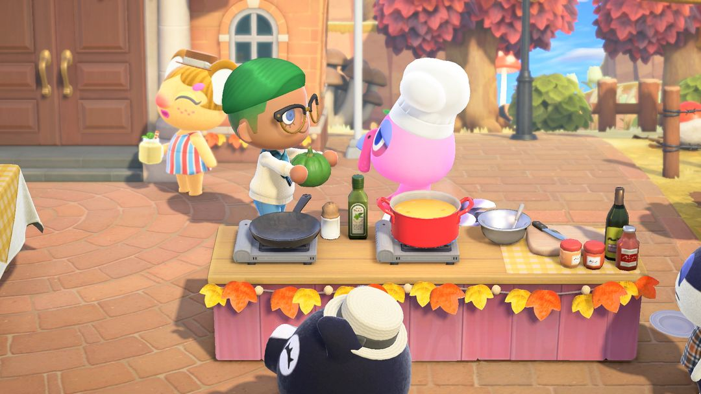
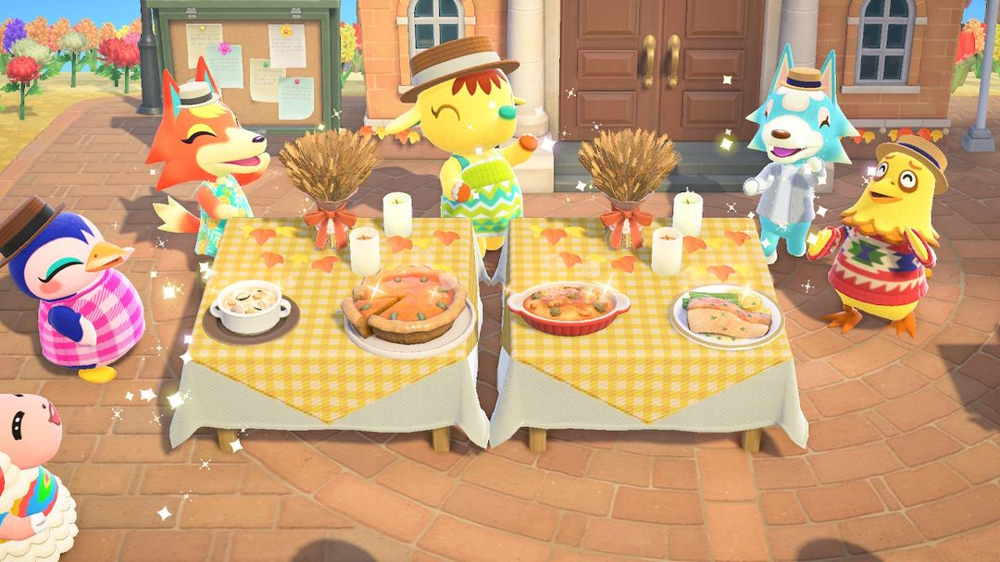
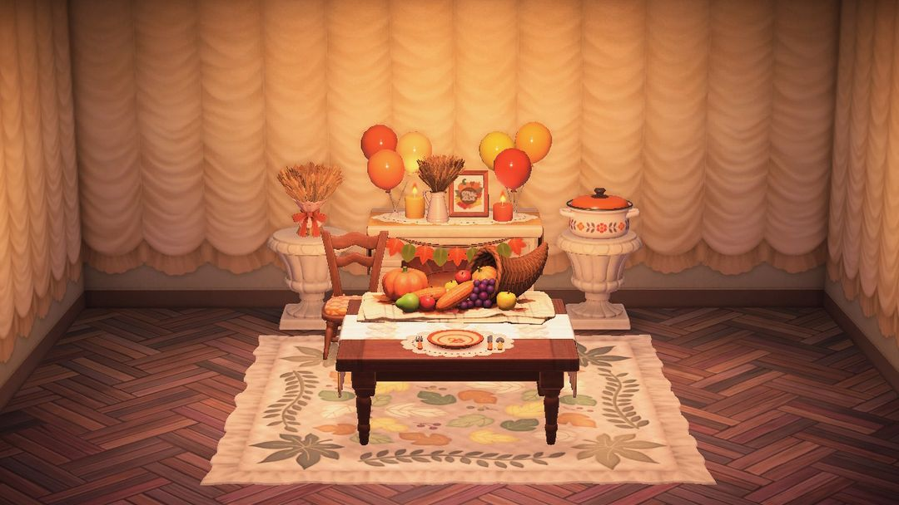

感恩节：帮富蓝凑齐四道菜的食材
每年 11 月第四个星期四，提前一个月就能把食材备好
感恩节当天，服务处前的广场摆起长桌，岛民戴着帽子、端着盘子来过节。主厨是火鸡富蓝，他负责掌勺，你负责跑腿找食材。时间是每年 11 月第四个星期四的 9:00 到 24:00，具体哪天可以看动森圈圈的活动日历。
富蓝一共做四道菜，每道菜做好会送你一件感恩节家具：感恩节地毯、墙、地板，最后是丰饶之角。每道菜他还会再讨一样「秘密食材」，交了另有奖励，第四道的秘密食材换来的是整套感恩节家具的DIY手册。要的东西里有南瓜、有海鲜，有的得潜水、有的得等南瓜长大，当天现找很赶。所以提前把南瓜种下去，海鲜抓好放进收纳，当天就从容多了。

给富蓝送食材（图：任天堂宣传图，经 Nookipedia）
01哪天过节
日期跟着美国感恩节走：每年 11 月的第四个星期四，南北半球同一天。北半球那时候是庆祝秋天的收获，南半球正是春天，过的是春天的节，富蓝要的部分食材也跟着不一样。
02当天怎么玩
流程是一道菜一道菜地来：
1. 9 点后去广场找富蓝，他会说这道菜还缺什么。
2. 把食材交给他，菜就做好了，你拿到这道菜的奖励。
3. 他接着会问要不要再加点「秘密食材」。交了，就多拿一份奖励。
4. 四道菜依次做完，岛民们会在服务处前跳舞唱歌，一直热闹到午夜。
每道菜要的食材和秘密食材如下。有些格子写着「之一」，是富蓝从几样里挑一样跟你要，当天点名哪样就交哪样。
| 菜 | 要的食材 | 秘密食材 |
| 蛤蜊浓汤 | 蛤蜊 ×3 | 虾夷扇贝 |
| 南瓜派 | 橘色南瓜 + 绿 / 白 / 黄南瓜之一 | 没要过的另外两色南瓜 |
| 奶汁烤菜 | 北：任一种蘑菇或牡蛎 + 贻贝 / 胡萝卜 / 土豆之一 南：鱿鱼 + 海胆 / 胡萝卜 / 土豆之一 | 珍宝蟹 |
| 法式煎比目鱼排 | 鲈鱼 + 面粉 / 比目鱼 / 鲷鱼之一（北半球还可能要鲽鱼） | 条石鲷 |

四道菜都做好了（图：Nookipedia）
食材不够，去岛民家转转
手头缺东西的话，去岛民家里串串门。在家做饭的岛民会缺一样鱼或海洋生物，帮他找来，他会回送一样富蓝要用的食材，还会顺口透露当前的秘密食材是什么。秘密食材心里没底的时候，先去问一圈再动手找，能少跑冤枉路。
03能拿到什么
每道菜做完都有一件固定的奖励，交了秘密食材再多一件：
| 第几道 | 做完 | 交了秘密食材 |
| 1 | 感恩节地毯 | 随机一件感恩节家具 |
| 2 | 感恩节墙 | 随机一件感恩节家具 |
| 3 | 感恩节地板 | 随机一件感恩节家具 |
| 4 | 丰饶之角 | 多彩多姿感恩节DIY |
分量最重的是第四道的「多彩多姿感恩节DIY」，一次学会 8 份DIY手册：感恩节壁炉、感恩节桌、感恩节椅、感恩节桌上布置、感恩节砂锅炖菜、感恩节装饰、感恩节盆栽架、感恩节麦子装饰。北半球学到的是秋收的配色，南半球是春天的配色，做出来以后两种可以互相改。前三道的秘密食材交不交只差一件随机家具，第四道这一样别漏掉。
四道菜全做完，富蓝还会送你「感恩节·料理」，学会这四道菜的料理手册。这一份 2.0 起才有，而且要先开通烹饪功能才学得了。

感恩节系列家具和丰饶之角（图：Nookipedia）
04提前一个月能备的
南瓜趁早种。南瓜苗然然那里一年四季都有，280 铃钱一个，长出来什么颜色是随机的。南瓜派要橘色加另一种颜色，秘密食材还要另外两色，四种颜色都留几个，到时候富蓝点哪个都拿得出来。
海鲜先抓好放进收纳。蛤蜊在沙滩上挖，虾夷扇贝和珍宝蟹得下海潜水去抓，条石鲷、鲈鱼在海边钓。这些都能放进收纳，平时碰到就留下，当天不用临时满海找。
面粉备上几袋。2.0 以后，法式煎比目鱼排可能会点名要面粉。自己种小麦，或者在 Nook商店买都行。
小提示当天错过了也能补：感恩节第二天到 11 月 30 日，Nook商店会摆出「多彩多姿感恩节DIY」和「感恩节·料理」这两份。正好赶上黑五购物节全场 7 折，DIY 那份 13,860 铃钱，料理那份 6,860 铃钱。
052.0 / 3.0 有什么变化
2.0 起，奶汁烤菜可能改要胡萝卜、土豆，法式煎比目鱼排可能改要面粉。同一版本还加了「感恩节·料理」，以及感恩节之后的黑五购物节。3.0 的更新说明里没提到感恩节有改动。
动森圈圈 · 小程序和 iOS App 都搜「动森圈圈」